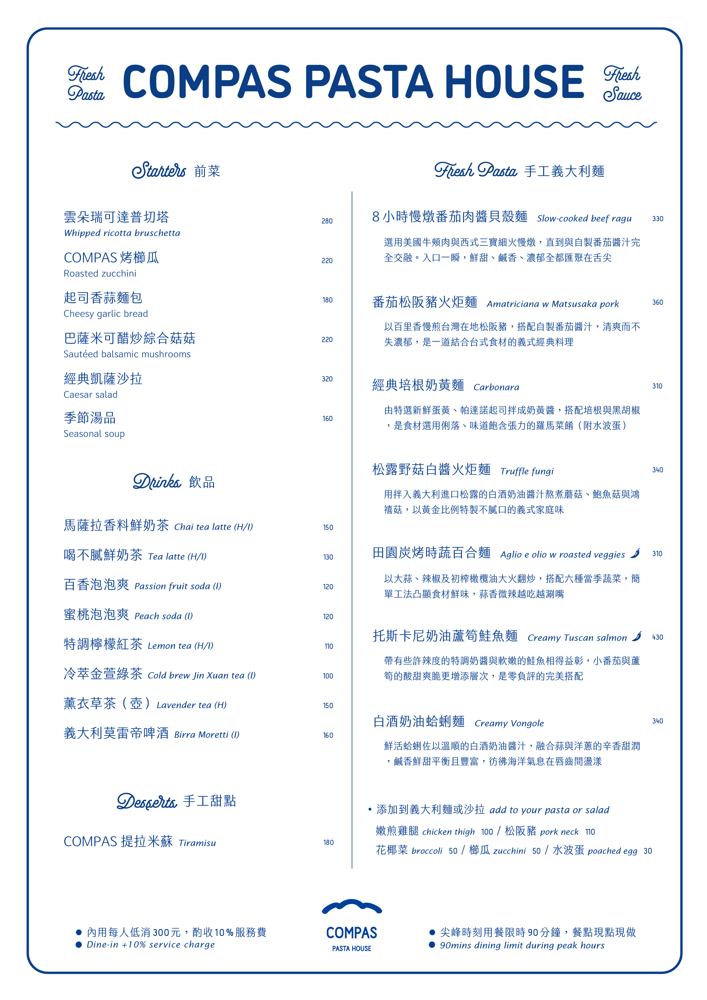
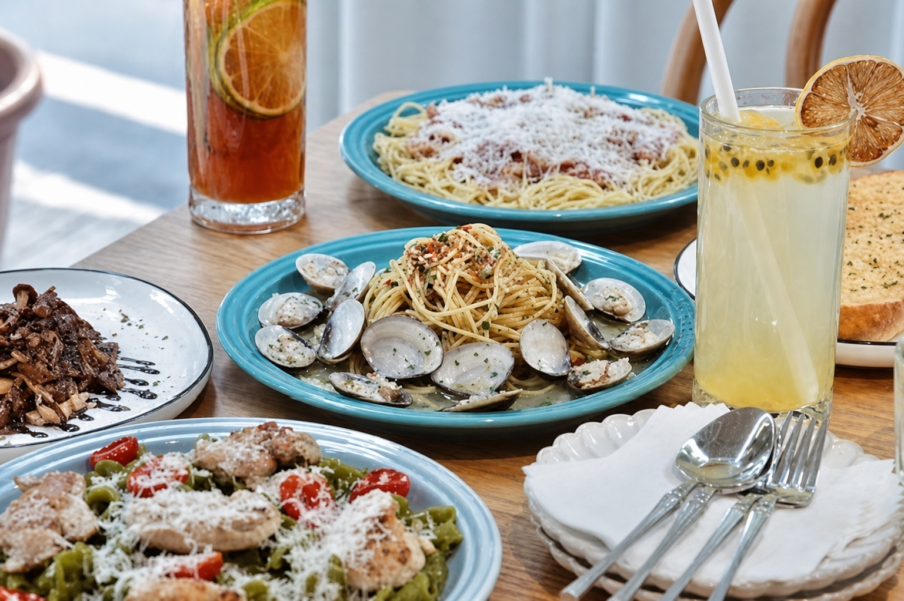
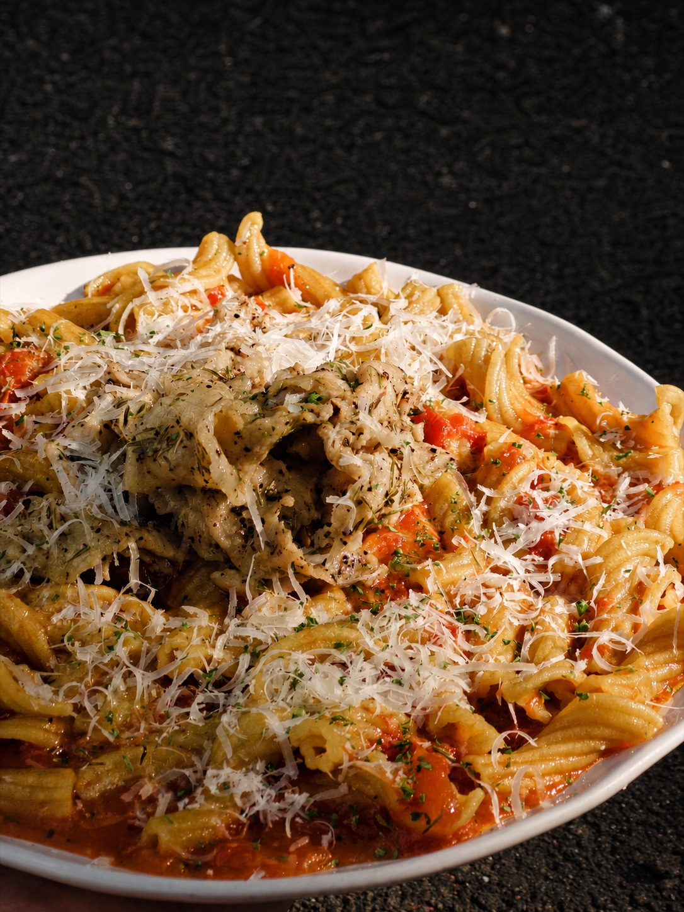
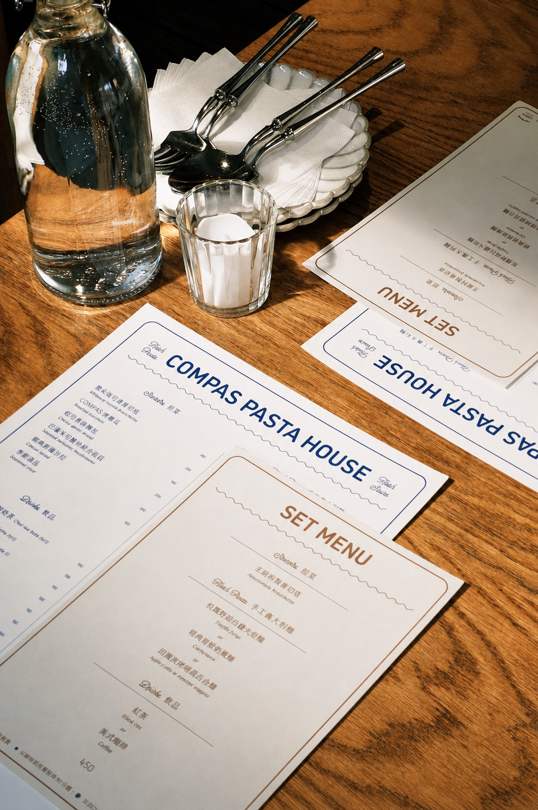

雲朵瑞可達普切塔
Whipped ricotta bruschetta
切片雜糧麵包鋪上自製瑞可達起司，搭配蜂蜜甜香與開心果脆口。
Fresh Pasta · Fresh Sauce
手工義大利麵、手工醬料，餐點現點現做。價格與品項依現場供應為準。


Starters
Whipped ricotta bruschetta
切片雜糧麵包鋪上自製瑞可達起司，搭配蜂蜜甜香與開心果脆口。
Roasted zucchini
厚切櫛瓜搭配起司，保留多汁與豐富層次。
Cheesy garlic bread
短圓法棍抹上自製香蒜醬，搭配帕馬森起司，鹹香濃郁、外酥內軟。
Sauteed balsamic mushrooms
陳年巴薩米可醋酸香明顯，多種菇類彈脆多汁。
Caesar salad
蘿蔓生菜拌入鹹香凱薩醬，搭配小番茄、培根、南瓜籽與麵包丁。
Seasonal soup

Fresh Pasta
Slow-cooked beef ragu
選用美國牛頰肉與西式三寶細火慢燉，直到與自製番茄醬汁完全交融。入口一瞬，鮮甜、鹹香、濃郁全都匯聚在舌尖。
Amatriciana w Matsusaka pork
以百里香慢煎台灣在地松阪豬，搭配自製番茄醬汁，清爽而不失濃郁，是一道結合台式食材的義式經典料理。
Carbonara
由特選新鮮蛋黃、帕達諾起司拌成奶黃醬，搭配培根與黑胡椒，是食材選用俐落、味道飽含張力的羅馬菜餚。（附水波蛋）
Truffle fungi
用拌入義大利進口松露的白酒奶油醬汁熬煮蘑菇、鮑魚菇與鴻禧菇，以黃金比例特製不膩口的義式家庭味。
Aglio e olio w roasted veggies
以大蒜、辣椒及初榨橄欖油大火翻炒，搭配六種當季蔬菜，簡單工法凸顯食材鮮味，蒜香微辣越吃越涮嘴。
Creamy Tuscan salmon
帶有些許辣度的特調奶醬與酥嫩的鮭魚相得益彰，小番茄與蘆筍的酸甜爽脆更增添層次，是零負評的完美搭配。
Creamy Vongole
鮮活蛤蜊佐以溫順的白酒奶油醬汁，融合蒜與洋蔥的辛香甜潤，鹹香鮮甜平衡且豐富，彷彿海洋氣息在唇齒間氤漾。
Drinks
Chai tea latte (H/I)
Tea latte (H/I)
Passion fruit soda (I)
Peach soda (I)
Lemon tea (H/I)
Cold brew Jin Xuan tea (I)
Lavender tea (H)
Birra Moretti (I)

Desserts
Tiramisu